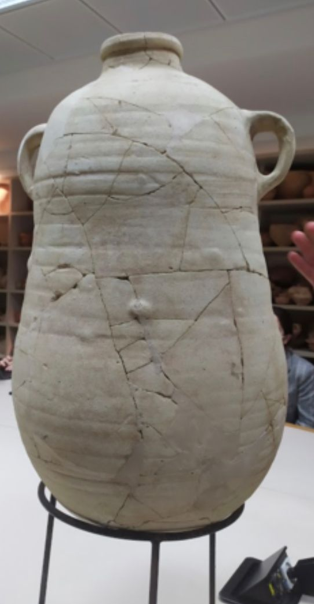
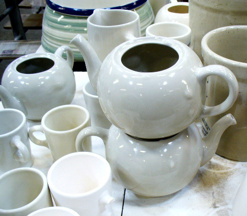
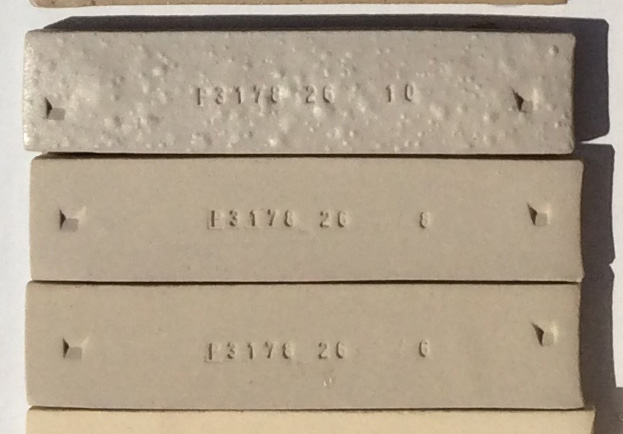
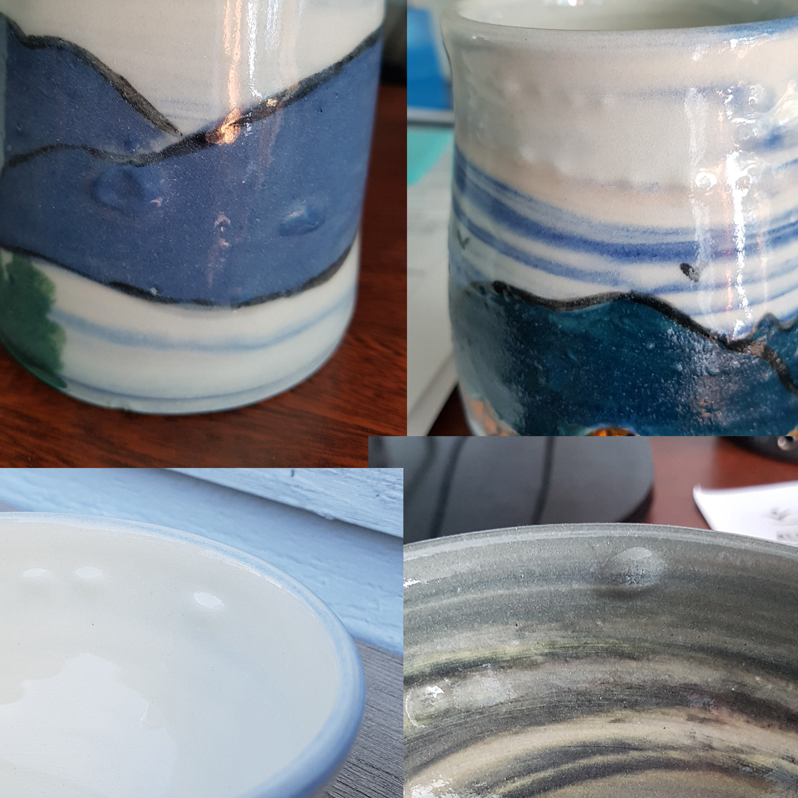
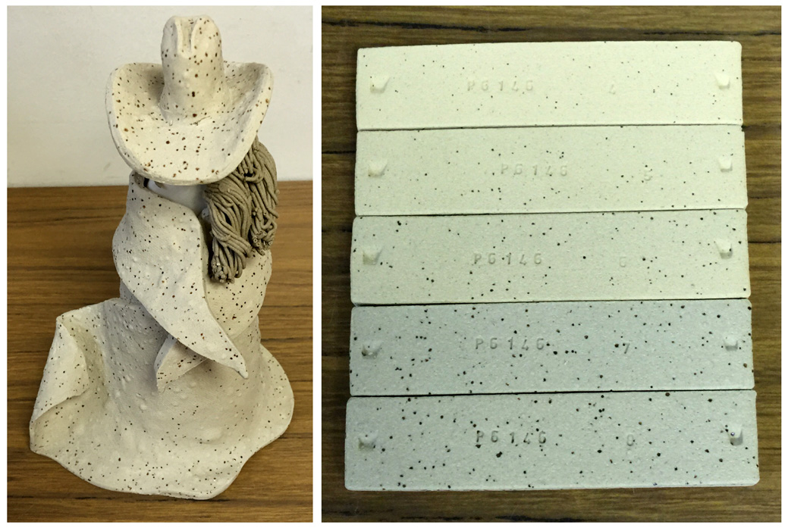
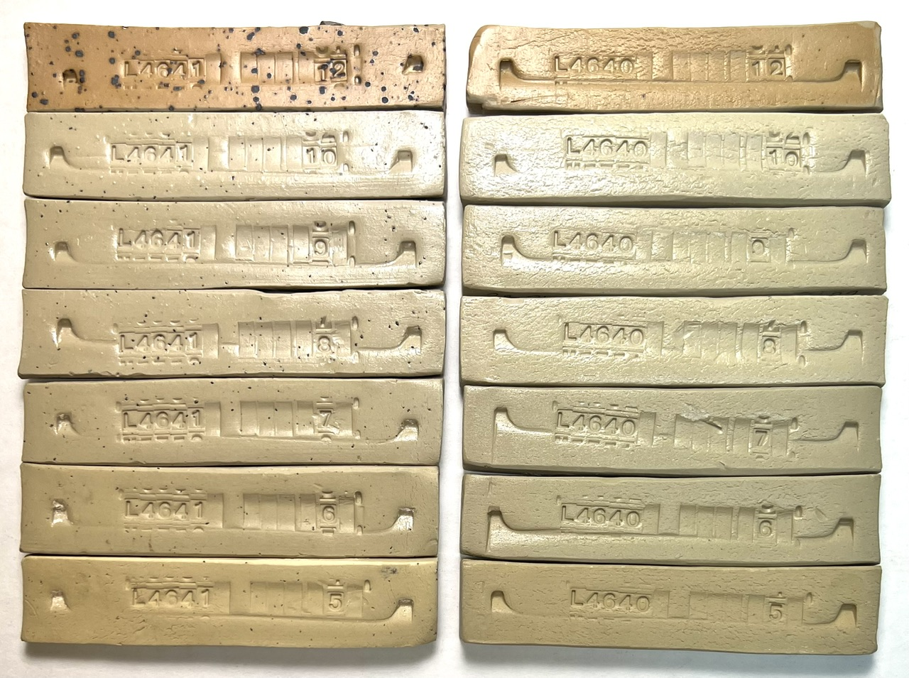
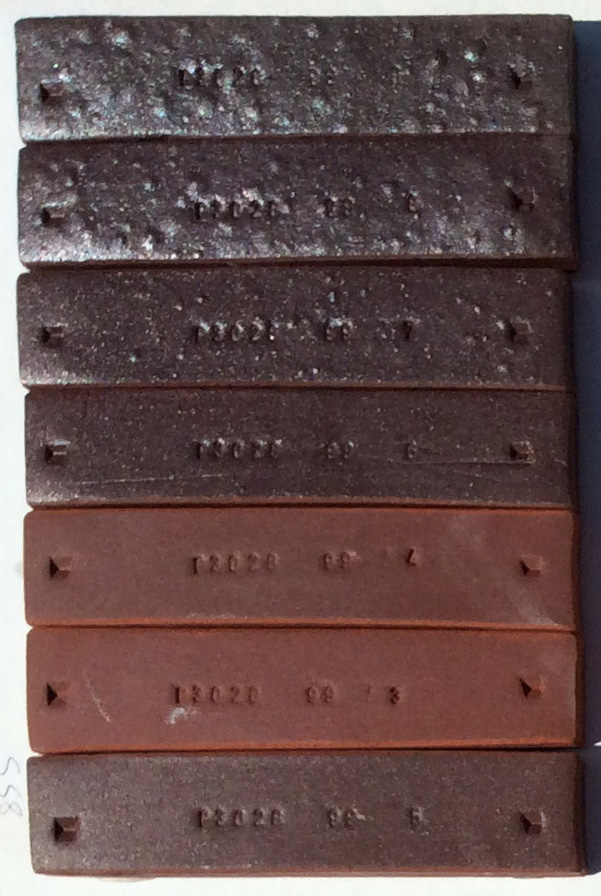
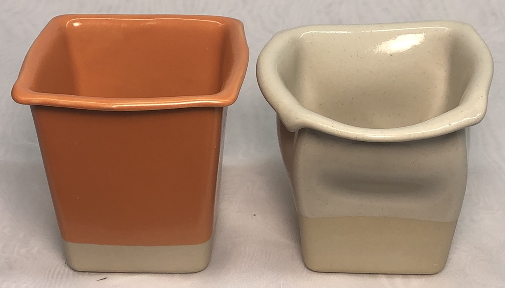

Bloating
Bloating occurs when the off-gassing of decomposing particles in a body has not completed by the onset of density and impermeability associated with the vitrification process.
Details
Body bloating (larger bubbles) and blistering (smaller ones) occur after a clay body matures to the point that the surface seals due to glass development but before the generation of gases from the decomposition of organic, carbonate or sulphate materials has completed. The internal pressures bubble the clay (since it has softened to the point of being flexible).
In many clay bodies (e.g. bodies many from air-floated industrial minerals, bodies high in silt or naturally clean materials), bloating never occurs, even if fired to zero porosity or beyond (where melting begins). In others having particles that generate gases (e.g. carbonates, lignite, or any kind of carbon material), bloating can begin to occur even at porosities above 1 or 2 percent. Bodies having added manganese granular are often very sensitive to this problem (the manganese is used to create visual speckling effects); these will almost certainly generate small bloats if the body is fired anywhere near the point at which the surface begins to seal. The problem is also common in terra cotta bodies (or those containing low melting red clays) that are being fired high enough to vitrify them. Clay bodies made from native materials that have not been ground to 200 mesh (and contain gas-producing impurity particles) are more likely, but not guaranteed, to bloat at some stage in their melting process.
Bloating can also occur in bodies that, by themselves do not bloat, but when glazed do. This is most likely to happen when the glaze is high enough in boron that it begins to melt and seal the surface at temperatures below which decompositions start (the G2826A2 recipe is an example). Even thin-walled vessels can bloat because of this. A complicating factor can be the presence of laminations parallel to the surface, perhaps caused by the forming or pugging process (of a plastic clay). Adjusting the glaze recipe to begin melting later in the firing and correcting issues in the forming process can certainly help to alleviate this problem.
Blistering is avoided by modern production techniques (e.g. fast firing, high-quality clays and body materials of low carbon content, fine particle sizes, glazes are made from consistent materials, ideally, they melt later and smooth out quickly).
Craftsmen making crystalline glazed ware can encounter bloating even in fine-particled high-quality porcelains by subjecting them to long hold periods, complex firing schedules that punctuate hold periods with rapid rise and falls in temperature and early melting highly fluid glazes. Another issue that potters can encounter is long and slow heat-ups in electric kilns having decaying elements, this can bloat otherwise stable porcelains.
Aggravating conditions that produce bloating include the presence of mineral particles (e.g. sulphates) that generate gases during the firing stage at which the body densifies toward zero porosity, the presence of excessive carbon or carbon-containing particles not burned away by bisquit or oxidation firing, laminations in the clay matrix or the presence of an early melting glaze (or soluble salt) that seals the surface preventing gas escape. Clay bodies containing manganese granular particles to produce fired speckle will almost certainly bloat if fired to vitrification.
Many kilns do not have reliable shut-offs or have deteriorated temperature measurement sensors, thus overfiring can be quite common. It is best to confirm firing temperature using properly set cones to avoid bloating (especially for volatile bodies). Better yet, fire the clay body to a temperature well short of a range where it might bloat. Finer grinding of the clay containing the offending particles will also help a lot, enabling vitrifying it more without fear of bloating (although warping during firing will be an issue).
Related Information
Ancient pottery with bloats - Why?

This picture has its own page with more detail, click here to see it.
Some archaeologists view this the bloating in these jars as a fault. But they might not be. The bloating could have been their way of gauging the maximum density (and thus strength) at which the terra cotta clay can be fired without warping or sagging. A requirement for these jars might have been water tightness so a few of these bubbles could have been proof of suitability.
That being said, Brian Weibe offered a more down-to-earth explanation. This form began in the Hellenistic period 2nd century BCE. Although potters could make exquisite hand-burnished ware (Eastern Terra Sigillata) making these store jars was all about efficiency. The 'utility' clay was augmented with sawdust and any industrial combustible (and probably hastily mixed by foot as they do today in Palestinian potteries in the West Bank hill country) to assure fast maturity with minimal time or fuss. The result is a genre that is easy to spot (by these barbaric throw lines and little attention to symmetry or style. They were easily broken and needed to be replaced inexpensively.
What can happen when already vitrified ware is refired?

This picture has its own page with more detail, click here to see it.
Bloating. These teapots have been refired to cone 6. This is just a standard porcelain body (feldspar, kaolin, silica, ball clay) that vitrifies fully at about cone 7. The slower the firing the more likely this is to happen (refires must be done more slowly to avoid dunting). This type of bloating is not easy to explain, only a few mitigating measures are obvious (putting ware in a cooler part of the klin, avoiding glazes of very high boron content, using a stoneware or whiteware instead of a porcelain, using higher quality body materials).
Bloating can happen suddenly

This picture has its own page with more detail, click here to see it.
Example of a buff stoneware clay bloating at cone 10 oxidation (whereas it appears very stable at cone 8). This is a 25x4 recipe employing 200 mesh silica, feldspar, kaolin and ball clay. The cause of this is not always obvious (the body should soften and melt without bloating). This body is fine for the production of ware to cone 8 but obviously, kilns must not be permitted to over-fire.
Bloating with multiple bodies at cone 6: Why is this happening?

This picture has its own page with more detail, click here to see it.
The problem occurred with standard Plainsman M340, M390, M350, M370 and P300. The stonewares have porosities of 2-3%, the M370 1% and the P300 0.5%. Thus, all of these have comfortable margins for overfiring. The G2926B glaze, used on all of them, does seal the surface pretty early so it can contribute to over-fired ware bloating sooner than typical. But the problem here is
likely the cone-fire modes on hobby kiln controllers. For this kiln, the cone 6 program goes to 2236F. That's cone 7. Adding the error of the thermocouple and the misinformation from poorly set cones the temperature overshoot could be more. That means this ware is likely just over-fired. Manually programming your kilns in consort with calibration using self-supporting cones, that is the way to get control. Add to that the benefit from firing schedules like the drop-and-soak PLC6DS and slow-cool C6DHSC.
Why is the clay blistering on this figurine?

This picture has its own page with more detail, click here to see it.
This is an admirable first effort by a budding artist. They used a built-in cone 6 program on an electronic controller equipped electric kiln. But it is overfired. How do we know that? To the right are fired test bars of this clay, they go from cone 4 (top) to cone 8 (bottom). The data sheet of this clay warns not to fire over cone 6. Why? Notice the cone 7 bar has turned to a solid grey and started blistering and the cone 8 one is blistering much more. That cone 8 bar is the same color as the figurine (although the colors do not match on the photo). The solution: Calibrate the kiln sitter by using a self-supporting cone.
Decomposing manganese granular particles are causing this stoneware to bloat

This picture has its own page with more detail, click here to see it.
This is a cone 6 stoneware with 0.3% 60/80 mesh manganese granular (Plainsman M340). Fired from cone 4 (bottom) to cone 8 (top). This body is normally stable to cone 8, but with the manganese it begins to bloat at cone 7! This is evidence that particles of manganese are generating gases as they decompose and melt at the same time as the body is vitrifying, these produce volumes and pressures sufficiently suddenly that closing channels within the maturing body are unable to vent them out.
What happens when a terra cotta body is fired to cone 6

This picture has its own page with more detail, click here to see it.
It may not melt, but will certainly warp and blister/bloat (as show here). If there is inadequate kiln wash or silica sand it will also stick to the kiln shelf.
Clays that do not bloat no matter how much they are overfired

This picture has its own page with more detail, click here to see it.
The causes of bloating can be less than obvious. Consider these two clays: Although they have simply been slaked in water from the raw lumps and have already densified to zero porosity by cone 5 (bottom bars) they remain stable through the entire range of cone 6 to 10 and also cone 10R (bottom to top)! The test bar on the top left does have particulate impurities (mainly ironstone concretions) and both contain significant soluble salts. The cone 10 bars are melting and the firing curves for all of these were relatively fast. Yet none of these factors have resulted in any bloating.
Some bodies cannot be fired to even near zero porosity

This picture has its own page with more detail, click here to see it.
Bloating in a high iron raw clay ground to 42 mesh (Plainsman M2). It is still stable, dense and apparently strong at cone 4 (having 1.1% porosity). But at cone 6 (top bar) it is bloating badly. At cone 5 the clay experiences the early stages of bloating. Cone 4 is thus "dangerous territory" for this particular clay. A reminder of this can be seen by putting on a transparent glaze - it fills with clouds of micro-bubbles from off-gassing that has begun well below cone 4.
Raw iron bearing clays can be volatile in firing

This picture has its own page with more detail, click here to see it.
Here is a good reason not to have single-temperature tunnel-vision when evaluating a clay body or clay material. This high-iron clay looks great at cone 3 or 4 (the second and third from the bottom, the bottom bar is cone 5 and out-of-place here). But by cone 5 (fourth bar up) the soluble salts (invisible at lower temperatures) begin to melt. Shortly after the clay rapidly descends into serious bloating and then melting by cone 7 & 8 (top bars).
Exploding clay. How do you do that?

This picture has its own page with more detail, click here to see it.
The top two terra cotta clay test bars were fired at cone 01 and cone 02. Notice how they puff up inside and eventually split open the outer layer revealing an "Aero chocolate bar" interior. Why? The fine-particled clay at the surface has vitrified and oxidized enough to become an almost porcelain-like surface, sealing it. But terra cotta clays have particulates of many minerals, inside the bars where oxygen is lacking some of them are decomposing and melting (and releasing CO2) at the very same temperature. Guess what happened when I mixed this clay 50:50 with Redart: This effect was gone, it fired to a stable and strong red stoneware. Redart, although also a terra cotta, raises the temperature at which the surface seals, beyond when the gas escape is happening. Some people actually seek this effect. The secret of making it happen is finding a native clay that vitrifies completely at the same temperature as mineral particles are decomposing to create gases.
How to decide what temperature to fire this clay at?

This picture has its own page with more detail, click here to see it.
This is an extreme example of firing a clay at many temperatures to get wide-angle view of it. These SHAB test bars characterize a terra cotta body, L4170B. While it has a wide firing range its "practical firing window" is much narrower than these fired bars and graph suggest. On paper, cone 5 hits zero porosity. And, in-hand, the bar feels like a porcelain. But ware warps during firing and transparent glazes will be completely clouded with bubbles (when pieces are glazed inside and out). What about cone 3? Its numbers put it in stoneware territory, watertight. But decomposition gases still bubble glazes! Cone 2? Much better, it has below 4% porosity (any fitted glaze will make it water-tight), below 6% fired shrinkage, still very strong. But there are still issues: Accidental overfiring drastically darkens the color. Low-fire commercial glazes may not work at cone 2. How about cone 02? This is a sweet spot. This body has only 6% porosity (compared to the 11% of cone 04). Most low-fire cone 06-04 glazes are still fine at cone 02. And glaze bubble-clouding is minimal. What if you must fire this at cone 04? Pieces will be "sponges" with 11% porosity, shrinking only 2% (for low density, poor strength). There is another advantage of firing as high as possible: Glazes and engobes bond better. As an example of a low-fire transparent base that works fine on this up to cone 2: G1916Q.
Fire organic ceramic shapes with this warping body for cone 6

This picture has its own page with more detail, click here to see it.
Left is L4410K, right is L4410L. Very similar, but L has 5% more dolomite. And these cone 6 glazes work well, G2934Y left and G2936A right. These are slip-cast pieces, the walls are not super thin, but the straight-sided shape makes them more susceptible to warping and buckling. This effect can also be achieved using talc bodies, but they have the issue of being brittle, volatile, bloating and not fitting glazes. But both of these pieces have excellent fired strength at cone 6, they have a porcelain-like surface. Of course you will need to test shapes, adjust dolomite content and control firing temperature carefully to be able to do this with consistency. If you are near a Plainsman Clays distributor, they made a test run of L4410L (as the new L213), boxes are available for order. If not, you can mix your own.
Links
| Glossary |
Body Bloating
When clay materials and bodies bubble as they melt or over fire. This normally happens in raw materials that contain particulates that produce gases during firing. |
| Glossary |
Body Warping
Warping happens during the firing of ceramic ware when there is a high degree of vitrification and inadequate measures are taken during forming and firing to prevent it. Unexpected warping often happens with unstable shapes and over firing. |
| Troubles |
Warping
There are multiple reasons why pottery and porcelain pieces can warp during firing, both vitreous and non-vitreous ware. Here is what to do about it. |
 PayPal | No tracking, No ads, No paywall, No transient content! Just organized, concise information constantly updated and improved. Was this helpful? Consider supporting me. |
| By Tony Hansen Follow me on        |  |
Got a Question?
Buy me a coffee and we can talk 

https://digitalfire.com, All Rights Reserved
Privacy Policy